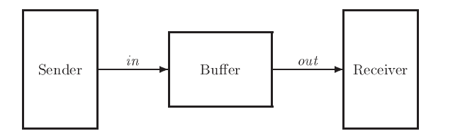
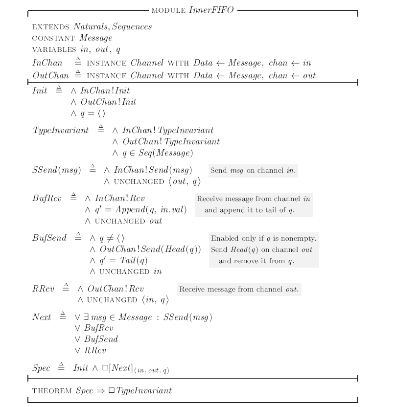
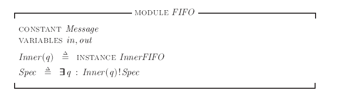
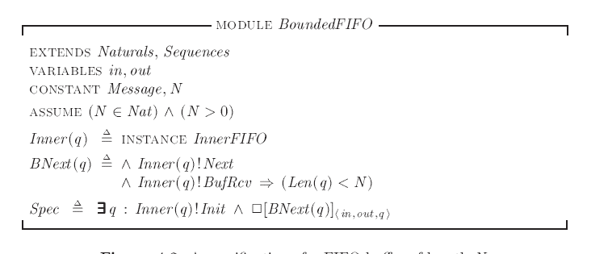

接下来我们继续关注更复杂的系统，本节关注的重点将是一个FIFO buffer（简称 FIFO)，它帮助发送方进程向接收方传递一系列的值。发送方和接收方分别通过 in 和 out 两个通道与buffer交流：

其中，in 和 out 两个通道可以用上一节中定义的channel moudle 刻画。
The Inner Specification
我们还是先来考虑刻画 FIFO 所需要声明的变量，我们需要刻画的有两个消息通道 in 和 out, 所有可以被从传递的消息集合 Message，此外还需要记录位于buffer中的vaules的集合, 即发送方已经发送但接收方还未接受的值，命名为q。其中Message 应该用常量定义，而其他三个用变量定义。
变量q在前文的图示中并没有显式出现，因此我们也想在最终的刻画中隐藏变量q,在后文中我们将阐述如何隐藏变量，在此之前我们首先要完成一个包含q的刻画，因此我们把这个版本的刻画称为Inner Specification。
我们可以用前一节中定义的channel 模块的实例来定义 in 和 out， 以in 为例：
1 | InChan == INSTANCE Channel WITH DATA <- Message, chan <-in |
上述语句代表着InChan 是模块 Channel 的一个实例，并且用当前模块的常量Message替换了Channel模块的常量DATA, 用当前模块的变量in 替换了Channel模块的变量chan 。
在声明上述语句时，在Channel 语句中被定义的任意符号 $\sigma$ ，都同时在当前模块中以$InChan!\sigma$的名字用相同的方式定义了(除了替换声明要被替换的变量)。比如，$InChan!TypeInvariant$被隐式定义为：
1 | in =\in [val: Message, rdy: {0,1}, ack: {0,1}] |
需要注意的是，类似InChan!Data的变量不会在定义InChan时隐式定义，因为Data在模块Channel中只被声明而没有被定义。
类似地，可以引入OutChan:
1 | Outchan == INSTANCE Channel WITH DATA <- Message, chan <- out |
in 和 out 的初始状态可以通过 InChan!Init 和 OutChan!Init 直接指定，同时，初始状态时q 应该为空序列：
1 | init == /\ InChan!Init |
同样，我们可以用Channel 模块中的 TypeInvariant 直接定义in 和 out 的类型不变量，而q中可以包含message中的任何元素：
1 | TypeInvariant == /\ InChan!TypeInvariant |
其中Seq(S) 是模块Sequece中定义的一个运算符， 它代表集合S中任意元素组成的所有序列的集合，只要我们在Specification 的开头 Extend 模块 Sequence， 就可以使用Seq运算符。
InnerFIFO 的完整刻画如下：

状态转移公式Next 包括四种不同的nonstuttering 状态转移 :
- SSend(msg) : 发送方在in 通道中发送消息。
- BufRcv : 缓存从in 通道接受消息，并将其加入队列q的末尾。
- BufSend ： 缓存从队列q中取出第一个消息，并将其发送到out通道中。
- RRCv : 接收方从out 通道中接受消息。
Hiding the Queue
前文中提到了代表缓存队列的变量q是一个内部变量，我们希望在最终的刻画中能够隐藏它，在本节中我们就将讨论如何在刻画中隐藏一个内部变量。
在TLA+中，我们可以用存在量词$\exist$去隐藏一个变量。
公式$\exist x:F$ 为真，意味着存在某个值序列，可以在行为中的每个状态中令x取合适的值使得F为真，通过存在量词，我们不必再显示定义具体的变量x，就可以完成我们想要的刻画。这样，在高级别的封装中，我们可以只关心外部的变量，而不管内部变量是如何实现的，只需要知道存在合适的内部变量让我们需要的刻画成立即可。
要隐藏变量q，我们需要定义一个新的模块，然后在新的模块中引入一个带参数的InnerFIFO模块的实例：

上述倒数第二行的INSTANCE其实是下述定义的缩写：
1 | Inner(q) == INSTANCE InnerFIFO WITH q <- q, in <- in, out <- out, Message <- Message |
其中，变量q会使用Inner 运算符中带有的参数q， 其他变量则使用FIFO 模块中声明好的同名变量。
Lamport也承认TLA+ 的变量隐藏方法可能看起来令人困惑，但即使你不懂其内涵，只要能记住存在谓词的表达方式就好。而且在大多数应用中，我们只需要写一个内部规约，然后用注释的方式指明哪些变量可见，哪些不可见，就可以达到同样的效果。
A Bounded FIFO
我们已经完成了一个对无边界的FIFO缓存队列的刻画，但我们现实的系统资源大小一定是有限的，一定只能处理有限数量的信息。在某些场景下，是否对资源大小的边界进行抽象是一件无关紧要的事，此时我们可以使用无边界的FIFO来刻画系统，但很多情况下，我们都需要关心这个边界限制，在本节中我们考虑如何将无边界的FIFO扩展到有边界。
我们需要在无限制的刻画中增加一个常量N,表示可容纳消息数量的大小，在有限制版本中，唯一的区别是，只有当缓冲区中的消息数量小于N时，它才能执行消息接受步骤BufRcv。也就是说我们要在InnerFIFO 的BufRcv 定义中添加合取规则 Len(q) < N。
我们可以直接利用InnerFIFO 的实例来完成修改：
